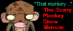
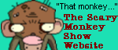
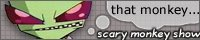
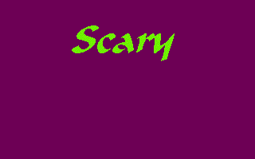
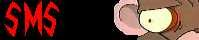

Link to me
 

Thanks to Jusuchinu of Toasted Bananas for this cool link banner


This cool inverted-monkey banner is from Vex of Insanity void!
Other Zim-related links
GIR - One of the best Zim sites out there, be sure to check out their goodies!
A Room With A Moose - The place for full episode downloads and unmade episode goodies
The Amazing Invader Zim Website- A new site already full of happy fun info. Now you too can ask Steve Ressel various things
Kevin Manthei Music Productions- Kevin composes the music for Invader Zim. He has some Zim mp3s on his site! He's also producing a Zim CD.
Bad, Bad Rubber Piggy- The new home of the augiewan picture galleries. These are very extensive galleries that have screenshots for every second.
Nick's official Zim supersite - I actually like Nick's Zim site. I am in the minority.
Siberkat's homepage - has sections with loads of Zim wavs
Toasted Bananas- General Zim stuff, along with sections on other shows and Jhonen's works. Adoptable Zim food!
The Resisty Resource- For all of your Resisty needs! Fight the Irken Empire!
Poonchyrama- A shrine-site dedicated to Poonchy, the infamous hate-drinker of our generation
The Zone- a nicely done Zim site
Over the stars - A Zim and JTHM fanfic site
Slave Labor Graphics- the home of the publishers of Jhonen's comics
Miracle Man comics- Another place where you can get Jhonen's comics